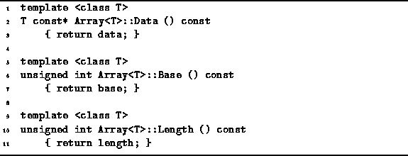

Data Structures and Algorithms
with Object-Oriented Design Patterns in C++
Data Structures and Algorithms
with Object-Oriented Design Patterns in C++
Program  defines three Array<T>
class member functions.
The three functions Data, Base and Length provide a means
for the user to inspect the contents of the Array<T> object.
defines three Array<T>
class member functions.
The three functions Data, Base and Length provide a means
for the user to inspect the contents of the Array<T> object.

Program: Array<T> Class Accessor Function Definitions
The functions Data, Base and Length, are const member functions . As such, they provide read-only access to the contents of the Array<T> object. Such functions are sometimes called member variable accessors . Clearly, the running times of each of these functions is a constant. I.e., T(n)=O(1).
 Copyright © 1997 by Bruno R. Preiss, P.Eng. All rights reserved.
Copyright © 1997 by Bruno R. Preiss, P.Eng. All rights reserved.